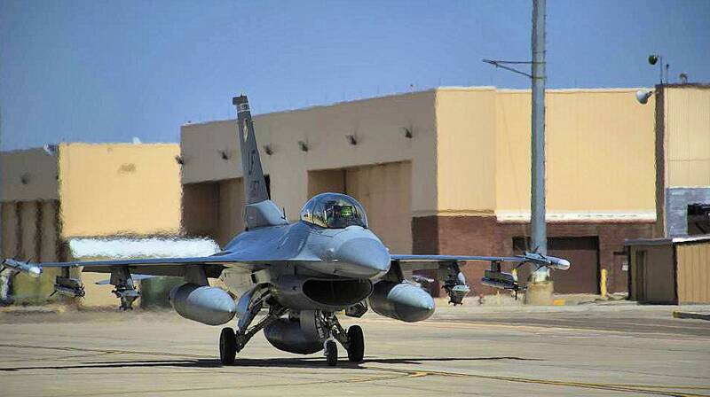

Holloman AFB
New Mexico

Air Force base near White Sands. Project Twinkle's observation post and tracking cameras for the green fireballs operated here in 1950 and 1951. 1
Open in the interactive Watcher
Related
Sources
- Project Twinkle final report Air Force Cambridge Research Center, via Project 1947, Nov. 1951